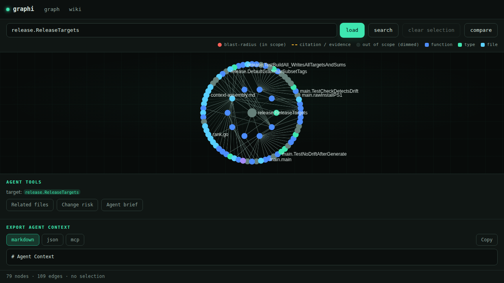

For developers
Fast, structural answers about an unfamiliar or large codebase — right on the command line.
$ graphi callers handleAuth
$ graphi impact handleAuth
$ graphi tuigraphi parses a repository into a deterministic, provenance-backed code graph — symbols as nodes, calls/references/imports as edges — and answers “who calls this”, “what breaks if I change it” and “how are two functions connected” in a single round-trip. Entirely on your machine.
open source · Apache-2.0 · 38 MCP tools · 22 languages
99.4% fewer context tokens 155× less context p<0.05 · 4 real repos See the benchmarksSource in, canonical code graph out — symbols as nodes; calls, references and definitions as edges.
A background daemon keeps the graph hot and answers structural questions in a single round-trip — no re-grepping, no re-reading whole files.
Every relationship carries provenance: a confidence tier (heuristic / derived / confirmed), a reason, and supporting evidence.
Fast, structural answers about an unfamiliar or large codebase — right on the command line.
$ graphi callers handleAuth
$ graphi impact handleAuth
$ graphi tuiA stable, read-only graph backend to query over MCP — without owning parsing/indexing and without sending code to a third party.
$ graphi setup
wire Claude Code · Copilot ·
Cursor · Windsurf · Desktop
graphi tui for the terminal version.graphi's token savings, benchmarked across 37 agent query pairs on four real open-source repositories — not a synthetic fixture. Both sides counted on graphi's own frozen ruler; every headline figure passes a two-sided significance test.
For the same set of code-intelligence questions across Gin, Click, Express and Got, graphi answered in ~106 tokens where a whole-file-read baseline spent ~16,485 — about 155× less context. Over the full run: 3,918 tokens vs. 609,931.
The causal chain — fewer bytes → fewer files read → fewer tokens → lower cost. Per-query means, whole-file-read-v1 baseline.
| Repository | Pairs | Tokens saved | Mean tokens |
|---|---|---|---|
| Gin · Go | 11 | 99.0% | 215 → 22,611 |
| Click · Python | 9 | 99.5% | 125 → 25,292 |
| Express · JS | 6 | 97.9% | 28 → 1,319 |
| Got · TS | 11 | 99.8% | 24 → 11,425 |
| Metric | Measured | Budget | Status |
|---|---|---|---|
| cold_start_p95 | 7.87 ms | 400 ms | PASS |
| full_index | 3.83 ms | 300 ms | PASS |
| freshness_lag | 4.43 ms | 2000 ms | PASS |
| binary_size | 30.5 MB | 32.5 MB | PASS |
Both sides are metered on the identical ruler — graphi's frozen whole-file-read-v1 method in engine/meter. Query pairs that return no cited artifacts are excluded rather than scored with a fabricated baseline, which is why 37 of 48 authored queries are included.
Benchmarked against four real OSS repositories — Gin, Click, Express, Got — over 37 of 48 authored query pairs (empty-result pairs excluded). Token counts use graphi's frozen whole-file-read-v1 ruler on both sides; significance by two-sided Welch's t-test (p < 0.05). Input cost is shown proportionally to context tokens.
Relationships and type hierarchy for any symbol.
callers · who calls a symbolcallees · what it callsreferences · every referencedefinition · where it's definedneighborhood · immediate neighborhoodimplementers · implements · overridessubtypes · supertypes · compoundReachability, call paths and concept resolution.
impact · blast radius of a changecall-chain · call path between two symbolsconcept · natural language → graph locationmetrics · hubs, bridges, centralitybatched · everything combined in one callTaint, dependence graph and history signals.
taint · propagation from sources to sinkspdg · program dependence graphinterproc · interprocedural fixpoint summariescontracts · API contracts & driftgit-history · churn, co-change, bus factorFind patterns and duplicates in the graph.
search_ast · AST pattern searchfind_clones · clone detectionsearch · lexical symbol searchsearch_semantic · optional embedding searchReference-correct refactors with a fail-safe.
refactor_preview · preview before applyingrefactor · rename / extract / move / signatureundo · atomic rollbackdiagnose · graph-derived diagnosticsinline · reference-correct inliningsafe_delete · only when no inbound refs remainDeterministic, LLM-free review signals.
pr-risk · per-region risk scorepr-signals · hub / bridge / surprisepr-questions · derived reviewer questionspr_comment · sticky comment + merge gatelist_prs · triage_prs · conflicts_prssuggest_reviewers · compare_branchescritique_review · critique an existing reviewLocal agent memory, all on your machine.
memory · per-scope / notebook / tagdistill · session → compact decision recordskillgen · deterministic skill generationLive transport, overlays and incremental indexing.
The full feature inventory — every MCP tool, every CLI subcommand, every HTTP endpoint — lives in docs/FEATURES.md.
The default tier is CGo-free. Go gets a type-checker-proven confirmed tier via go/types; every other language runs through per-language resolvers at the heuristic tier with file:line evidence.
No login, no sign-up. Install and go.
No usage data, no phone-home. What you do stays with you.
An enforcement guard rejects any non-loopback dial at the surface boundary.
Optional embedding search is off by default. The default binary ships no embedder and degrades gracefully.
Install — one line, checksum-verified, no sudo.
curl -fsSL https://raw.githubusercontent.com/samibel/graphi/main/install.sh | sh
iwr -useb https://raw.githubusercontent.com/samibel/graphi/main/install.ps1 | iex
Run it in your repo — your browser opens the interactive code graph.
cd your-repo && graphi
On a headless box or over SSH, graphi prints the local URL instead with --no-browser.